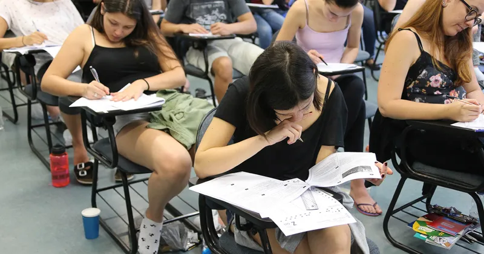
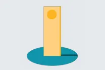
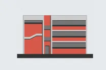
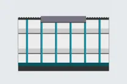
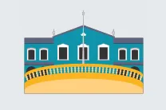
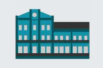
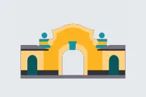
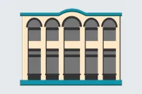
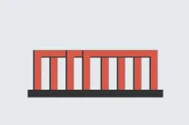

Graduação na USP
A USP é uma universidade pública e gratuita, que oferece cursos de graduação em todas as áreas do conhecimento. A seleção é feita por meio do vestibular da Fuvest ou pelo Enem USP. Para quem já cursa o ensino superior, também é possível solicitar transferência.
Ajudando a
escolher a
profissão
Para ajudar o estudante na escolha da carreira profissional e se informar sobre como funciona a Universidade, existe o programa USP e as Profissões. A iniciativa organiza duas vezes por ano a Feira USP e as Profissões (uma edição na capital paulista e outra em um dos campi no interior) e realiza visitas monitoradas às escolas, faculdades, institutos, museus e órgãos da USP.
A USP também abriga cursinhos pré-vestibulares populares mantidos por estudantes que auxiliam estudantes em vulnerabilidade social e econômica a se preparar para o exame vestibular. Confira quais são eles neste link.
Formas de ingresso
Todos os cursos de graduação da USP são gratuitos. O ingresso é realizado das seguintes formas:

Vestibular da Fuvest
Organizado pela Fundação Universitária para o Vestibular (Fuvest), a prova é realizada todo ano e é responsável por selecionar a maior parte dos alunos. As normas do concurso devem ser consultadas no Manual do Candidato, publicado anualmente no site da Fuvest. As informações sobre o último processo podem ser conferidas na página neste link.
Processo seletivo Enem USP
No processo organizado também pela Fuvest, o candidato concorre com a nota do Exame Nacional do Ensino Médio (Enem) em até três cursos de uma das áreas de conhecimento: Ciências Biológicas e da Vida; Ciências Exatas e Tecnológicas e Ciências Humanas e Sociais, conforme a Tabela de Vagas disponível no ano. A seleção dos candidatos é feita por classificação conforme a pontuação obtida no Enem. Confira a página do Enem USP.
Nestas duas formas de ingresso, a USP adota política de cotas sociais e raciais, que envolve a reserva de vagas para alunos oriundos de escolas públicas e para autodeclarados pretos, pardos e indígenas (PPIs) egressos da escola pública. Saiba mais clicando aqui.
Transferência externa
Também é possível estudar na USP a partir do processo de transferência, realizado pela Fuvest. A USP aceita transferência voluntária de estudantes de curso superior de graduação, condicionada à existência de vagas e aprovação em processo seletivo segundo normas estabelecidas pelo Conselho de Graduação. A divulgação do edital de transferência ocorre anualmente, em geral no mês de maio. Para mais informações sobre o vestibular e as provas de transferências externas, consulte o site da Fuvest e os editais do último processo neste link.
Aluno especial da graduação
As unidades também aceitam estudantes especiais, que não estejam matriculados na USP, em disciplinas isoladas. As inscrições devem ser realizadas nas Seções de Alunos responsáveis pela disciplina ou curso de interesse, nas datas estabelecidas no Calendário Acadêmico, disponível pelo Sistema JúpiterWeb.
Os critérios de admissão e seleção de estudante especial são estabelecidos em cada unidade. Clique aqui para pesquisar as disciplinas dos cursos de graduação da Universidade.
Estrangeiros
Candidatos estrangeiros também podem concorrer a uma vaga na USP, tanto por meio do vestibular da Fuvest como pelo Enem USP. Também há o Programa de Estudantes Convênio de Graduação (PEC-G) que oferece oportunidade de formação superior a estudantes de países em desenvolvimento, com os quais o Brasil mantém acordo educacional, cultural ou científico-tecnológico.
Cursos oferecidos
Os cursos de graduação da USP são oferecidos em oito cidades: São Paulo, Bauru, São Carlos, Lorena, Ribeirão Preto, Piracicaba, Pirassununga e Santos. Há cursos, como o de Administração, que são oferecidos em mais de um campus, então o estudante deve acessar o site de cada unidade e conferir qual o projeto pedagógico que mais se alinha às suas expectativas. Acesse o site Seu Curso USP! para conferir os vídeos explicativos sobre cada um dos cursos oferecidos.

São Paulo

Bauru

Lorena

Ribeirão Preto

Piracicaba

Pirassununga

Santos

São Carlos
Estes são, em ordem alfabética, todos os cursos da Universidade. Clique em cada um para saber onde estudar e obter mais informações sobre carga horária e grade curricular:
Estrutura curricular
- Administração – São Paulo – diurno
- Administração – São Paulo – noturno
- Administração – Ribeirão Preto – diurno
- Administração – Ribeirão Preto – noturno
- Administração – Piracicaba – diurno
Onde estudar
Faculdade de Economia, Administração, Contabilidade e Atuária / São Paulo
Faculdade de Economia, Administração e Contabilidade de Ribeirão Preto
Escola Superior de Agricultura “Luiz de Queiroz” / Piracicaba
Estrutura curricular
Onde estudar